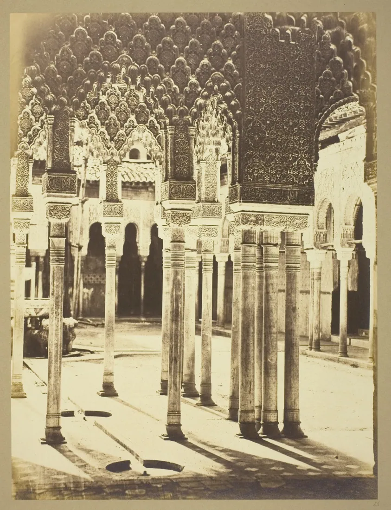
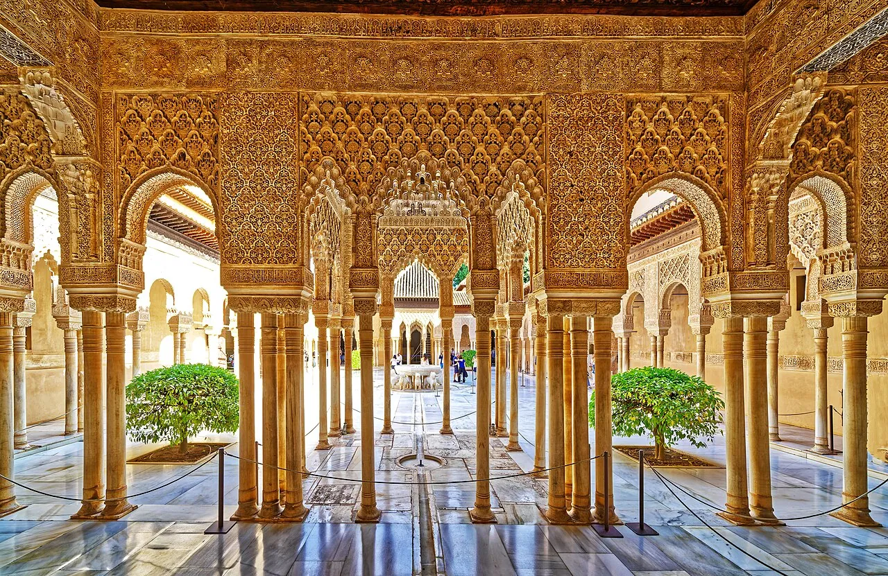
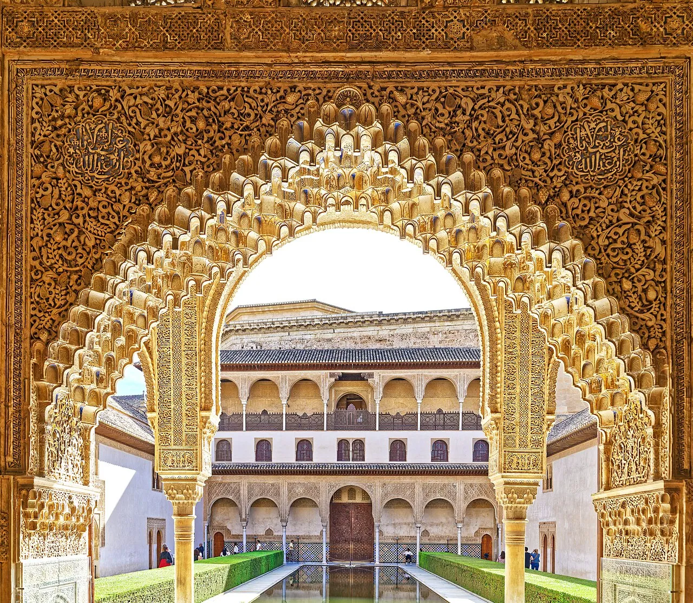
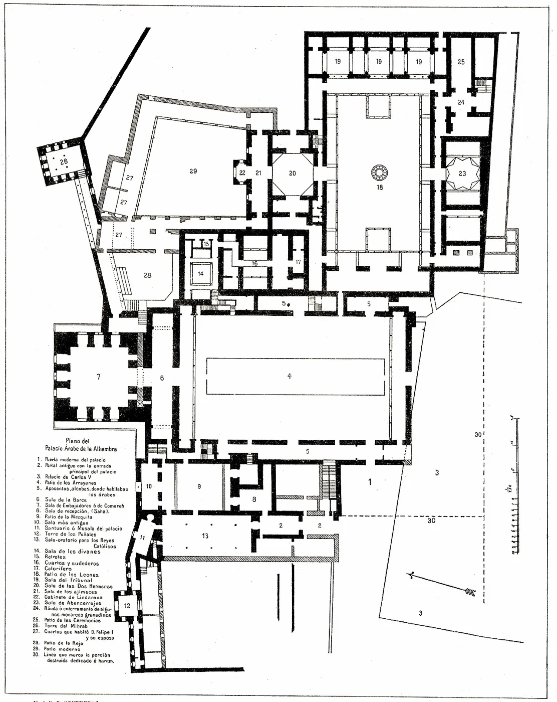
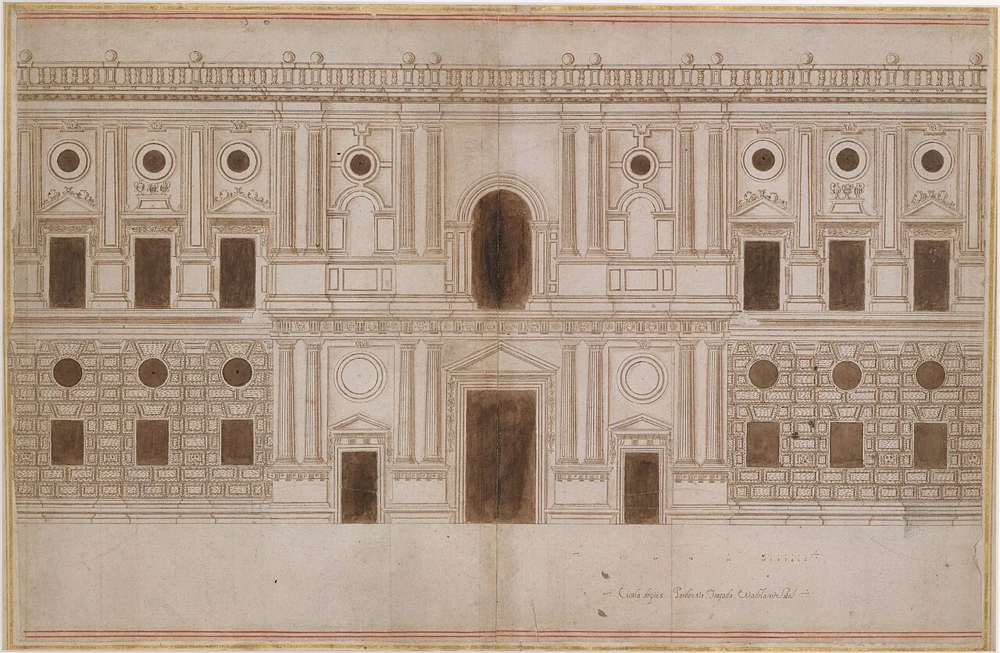

1/10 · Exterior · Tour of the AlhambraPhoto: Holger Uwe Schmitt · CC BY-SA 4.0 · source2/10 · Exterior · Tour of the AlhambraPhoto: Holger Uwe Schmitt · CC BY-SA 4.0 · source

3/10 · Exterior · Entrance Court of the Lions, AlhambraPhoto: Charles Clifford, Art Institute of Chicago · CC0 · source

4/10 · Interior · Tour of the AlhambraPhoto: Holger Uwe Schmitt · CC BY-SA 4.0 · source5/10 · Interior · Tour of the AlhambraPhoto: Holger Uwe Schmitt · CC BY-SA 4.0 · source

6/10 · Interior · Tour of the AlhambraPhoto: Holger Uwe Schmitt · CC BY-SA 4.0 · source7/10 · Detail · Tour of the AlhambraPhoto: Holger Uwe Schmitt · CC BY-SA 4.0 · source8/10 · Context · Barrio Castrense of Alhambra in January 2025, picture taken from Tore de la VelaPhoto: Wikiolo · CC BY 4.0 · source

9/10 · Plan · Constantin Uhde, Baudenkmäler in Spanien und PortugalPhoto: Constantin Uhde · Public domain · source

10/10 · Elevation · Drawing; ornament and architecture; DrawingsPhoto: Creator:Juan de Orea · CC0 · source
The Alhambra (, Spanish: [aˈlambɾa]; Arabic: الْحَمْرَاء, romanized: al-ḥamrāʼ ) is a palace and fortress complex located in Granada, Spain. It is one of the most famous monuments of Islamic architecture and the only well-preserved palace from the medieval Islamic world. Additionally, the palace contains notable examples of Spanish Renaissance architecture.
The building of the complex was begun in 1238 CE by Muhammad I Ibn al-Ahmar, the first Nasrid emir and founder of the Emirate of Granada, the last Muslim state of al-Andalus. It was built on Sabika hill, an outcrop of the Sierra Nevada which had been the site of earlier fortresses and of the 11th-century palace of Samuel ibn Naghrillah. Later Nasrid rulers continuously modified the site. The most significant construction campaigns, which gave the royal palaces much of their defining character, took place in the 14th century during the reigns of Yusuf I and Muhammad V. After the conclusion of the Christian Reconquista in 1492, the site became the Royal Court of Ferdinand and Isabella (where Christopher Columbus received royal endorsement for his expedition), and the palaces were partially altered. In 1526, Charles V commissioned a new Renaissance-style palace in direct juxtaposition with the Nasrid palaces. The Alhambra fell into disrepair over the following centuries, with its buildings occupied by squatters.